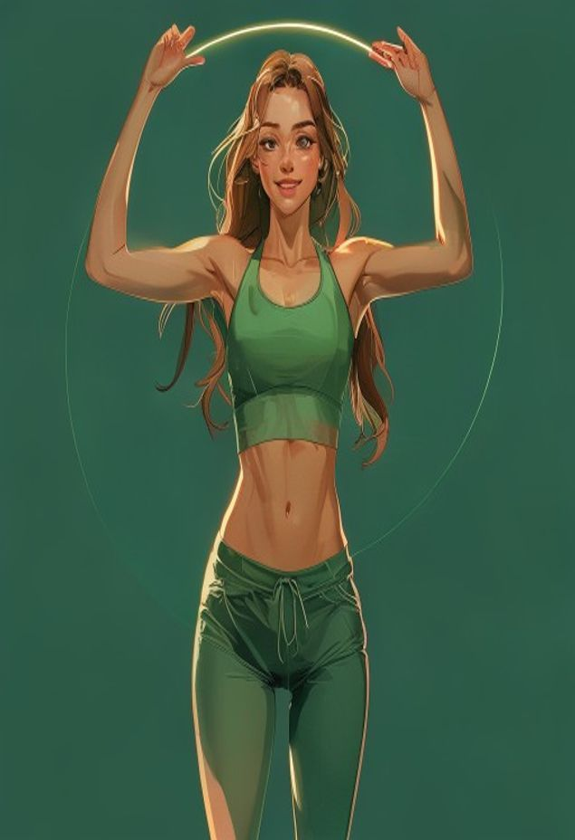

Главный, эмоциональный → персонаж крупный, держит кольцо калорий + реплика дня.
9:415G ▲ 🔋
Сегодня

Отличное начало дня! 🫶
СЕГОДНЯ СЪЕДЕНО
86
Белки
42
Жиры
120
Углев
1.2
Вода л
Персонаж «до-появляется» на каждом экране, но по-разному и без перебора. Принцип: чем плотнее данными экран — тем деликатнее персонаж (герой на «Сегодня» → уголок на списках). Статичные элементы (кольцо, графики, списки, цифры) неизменны — меняются только персонаж и тема под выбранную персону. Показано на Подруге.
